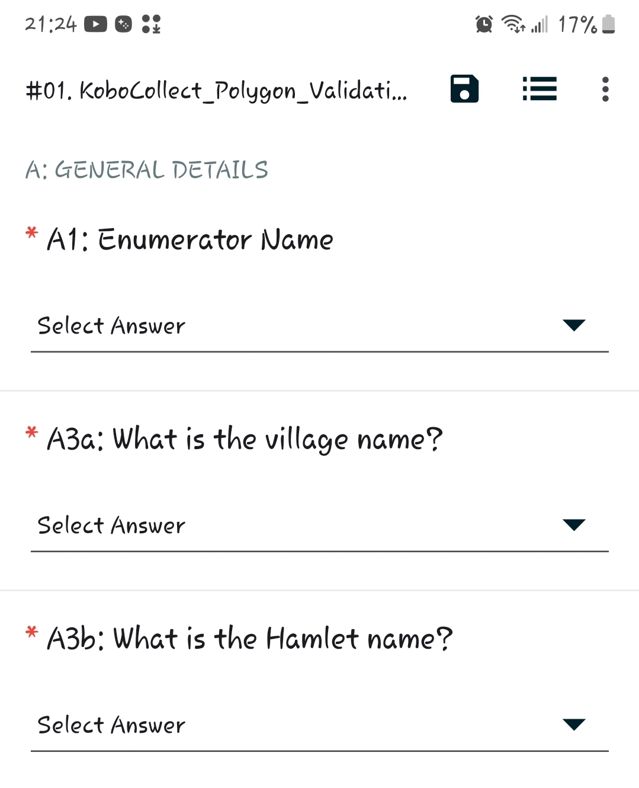
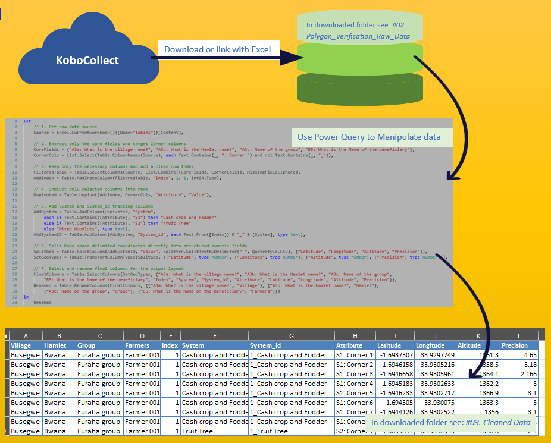
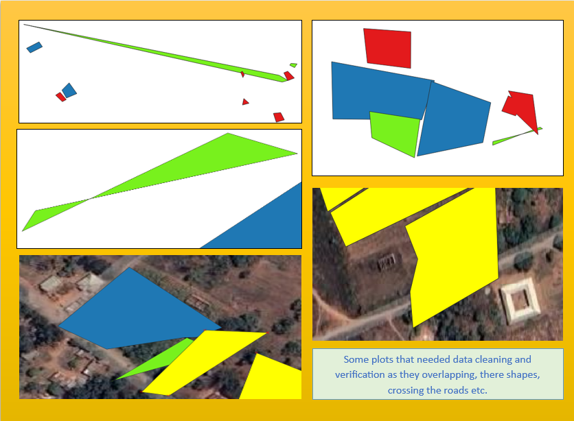
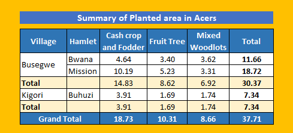
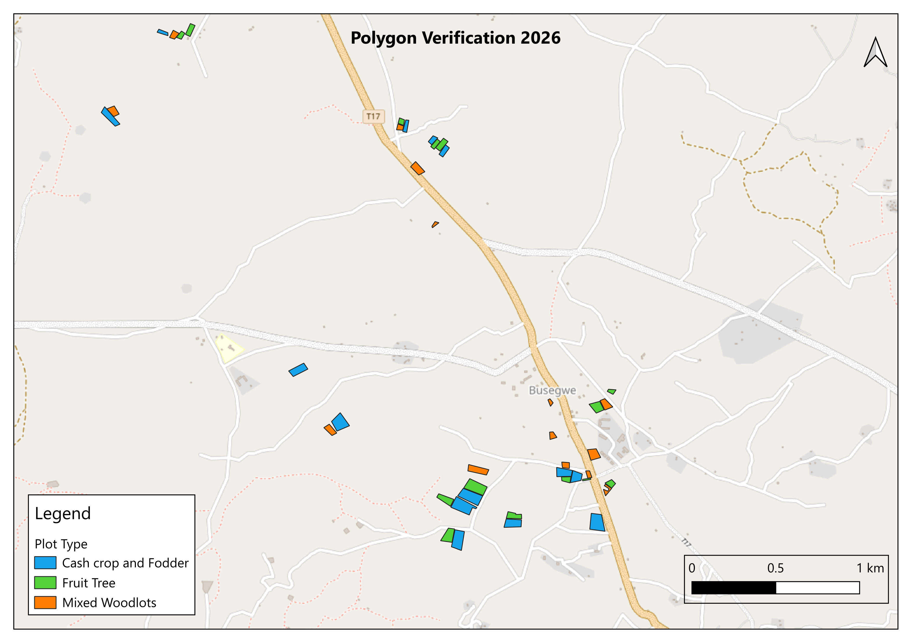

Geospacial Analysis using QGIS Tools
Polygon Validation survey
Introduction
This project was designed to validate and map farmer planting areas using a complete geospatial data collection and analysis workflow. Starting from scratch, field data were collected using KoboCollect, where polygon boundaries of farmers' plots were captured alongside their geographic locations.
The primary objective was to verify the actual areas where seedlings had been planted under three planting systems: Cash Crop and Fodder Systems, Mixed Woodlots, and Fruit Trees. Using QGIS, the collected polygon data were processed, validated, and analyzed to ensure spatial accuracy and data quality.
The project aimed at the calculation of plot sizes for individual farmers and planting systems, to attain reliable information on the total area covered by each intervention. The final outputs supported project monitoring, reporting, and decision-making by delivering accurate spatial data on seedling distribution and land utilization. Here is a step by step overview of the process and results:
Step 1: Design of data collection tool and training of data collectors:
A KoboCollect form was created to capture polygon boundaries and relevant attributes for each farmer's plot. Data collectors were trained on how to use the tool effectively in the field (The designed tool named #01. KoboCollect_Polygon_Validation_Tool is attached in dowloded folder).
Step 2: Field data collection:
The tool was then uploaded in KoboCollect, then dowloaded by each data collector on the data collection tablet/smart phone. Data collectors went to the field to capture the polygon boundaries of farmers' plots Each polygon represented a specific planting area, and its geographic location was recorded for spatial analysis.
Step 3: Data Extraction from Kobo and data cleaning using power Query
The data was imported in excel, then used the power query to clean and manipulate the data to a simple smart format that which usifull for further analysis.


Step 4: Import data in QGIS
To import the data into QGIS, the Excel dataset is first converted into a Comma-Separated Values (CSV) format. After importing the coordinates, the collected points are transformed into polygons using two processing tools: Points to Path and Lines to Polygons.
Once the polygons are created, the Join Attributes feature is used to transfer all relevant information from the original point layer to the newly generated polygon layer. This process preserves the associated farmer and planting data, making it possible to classify and analyze plots according to the different planting systems: Cash Crop and Fodder Systems, Mixed Woodlots, and Fruit Trees.
Step 5: Data cleaning and verification in QGIS
After generating the polygon layer, each feature is carefully reviewed to identify any data quality issues. This involves examining polygon shapes, boundaries, overlaps, gaps, and attribute inconsistencies to determine whether corrective action is required.
Based on the assessment, identified issues are categorized into two groups: those that can be resolved through GIS editing and data cleaning within QGIS, and those that require field verification to confirm the actual plot boundaries, locations, or planting information before corrections can be made.

Step 06: Calculate Area
Once all polygons have been reviewed and cleaned, QGIS is used to calculate the area of each plot accurately. The resulting area measurements are stored within the polygon attribute table, enabling analysis at both the farmer and planting-system levels.
For further summarization and reporting, the attribute table is exported to Excel, where additional analyses, aggregations, and visualizations can be performed to generate project-level statistics and insights.

Step 07: Map Layout and printing
The final validated data is transformed into a professional map layout for reporting and presentation purposes. Using QGIS Layout Manager, all essential cartographic elements are incorporated, including a map title, legend (key), scale bar, north arrow (compass direction), coordinate grid where required, and other relevant annotations.
The completed map is then exported in high-quality formats such as PDF or image files, making it suitable for printing, reporting, stakeholder presentations, and project documentation.

Key Takeaway
This project demonstrates my ability to manage an end-to-end geospatial data workflow, from designing digital data collection tools and training field teams to performing spatial analysis and data quality assurance.
By integrating KoboCollect, Power Query, Excel, and QGIS, I transformed raw field coordinates into validated polygon maps and reliable area estimates for multiple planting systems. The project provided accurate evidence on seedling distribution and land utilization,
enabling informed decision-making, effective project monitoring, and credible reporting. It highlights my expertise in GIS, spatial data validation, data cleaning, geospatial analysis, and the translation of complex field data into actionable insights.